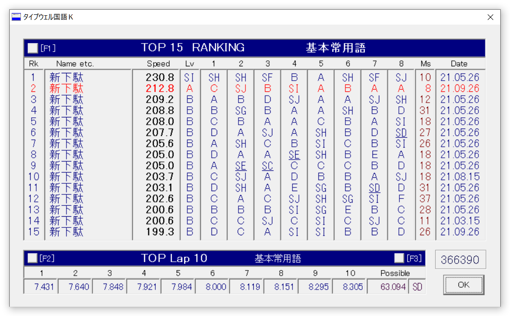

投稿日: 2021/09/26 17:03:42
カテゴリ: Dvorak配列
サムネイル: 
久々にブログにコメントをもらって、新下駄配列のことを考える機会があったので、練習記録を更新してみる。
改めてタイプウェル国語Kをしてみると、速度的には大して変わらずというか、昔のほうが速いくらいかもしれない。それでも日常的に使用していて、メッセージも早く返せてる自信があったので、ちょっと残念。（上のスクショは一番速かった記録で、他はほとんどB。）
久しぶりにタイプウェルをしてわかったことは、多分だけど、普段よく使う言葉はとても速く打てるようになっている一方で、普段全然意識することのない言葉はどうも打鍵が遅いぽい。Dvorak(P)の英語打鍵でもその傾向はあるけど、Qwertyに比べても新下駄の場合は顕著かもしれない。新下駄は組み合わせのパターン数が多いだけに、だんだん普段打つ言葉は慣れて、打たない言葉は打てないみたいな二極化が起こりやすいのかも。
日常的にはもうここ数ヶ月ずっと新下駄＋Programmer's Dvorak（日本語入力は新下駄、英語・半角入力はDvorakP）だけを使っていて、普段の打鍵はとても快適。速度記録としては（新下駄配列は）全然遅いかもけど、日常的には打鍵がとても楽しい。
ただ、副作用として、最近ホントにQwertyが打てなくなってしまった。
たまに新しくセットアップするPCとかでQwertyで打つのだけれど、最初の5分くらいはびっくりするほど打てなくて驚く。ただ、5分も打ち続けるとなんとなくは打てるようになる。
Dvorakの記事でも同じことを書いたのだけれど、この打てなさは日本語入力と英語入力でだいぶ違っていて、ローマ字入力としてのQwertyは未だにそこそこ打てるのにも関わらず、英語入力としてのQwertyはホント打てない。考えられる理由としては、DvorakとQwertyは結構似ている配置が多くて、それが間違いを誘発して打てなくしているような気がする。自分はDvorakでローマ字入力をしたことがないので、それも影響していると思う。新下駄配列の日本語入力とQwertyのそれは全く違うので、この概念的な差がローマ字入力と英語入力におけるQwertyの忘却度や阻害度に影響しているのかもしれない。
さて、新下駄の記事としては若干脱線してしまったけど、1年も同じ配列を打っているとこの時期はマンネリ化するというか、特に変化がないのであまり特筆して書くこともない (笑)。実際タイプウェルで測ると打鍵速度は遅いのだけれど、実用上はそんなに遅い感覚はないというのも不思議で、仮に実際遅かったとしても、打鍵の楽さが全然違うので、今更Qwertyに戻す気は全くない。
前述したようにごくまれにQwertyを渋々打つことがあるのだけど、それが続くことは実はほとんどなくて、続きそうな予感がするとすぐエミュレータをインストールしたり、「かえうち2」を繋いだり、別のPCからリモート制御したりする。それでもやっぱり臨時に一日丸々Qwertyを打つことはあるのだけど、そういう日は不思議とスイッチが切り替わって自然に打てるようになるのでホント不思議。でも、こういう日が減るともっとQwertyが打てなくなっていくのかもしれない。
新下駄＋Programmer's DvorakとQwertyって、打鍵速度的にはあまり変わらないというか、多分今でもQwertyの方が入力速度は速いのだけど、快適さは全然違う。こればっかりは体感覚なので何とも伝達しにくい部分なのだけれど、たまにQwertyを打ったあとに戻したくならないと思うのはそういうことだろうと思う。数ヶ月前は新下駄＋Qwerty（日本語入力は新下駄、英語・半角入力はQwerty）だったので、英語入力をするときに手にストレスを感じていたのだけれど、今はそういうこともなくて快適そのもの。（ちなみに新下駄＋Qwertyの頃は、当然かもだけどQwertyだけに切り替えても普通に打てていた。）
入力速度が遅い件については、日本語も英語（主にプログラミング）も入力補完があるので、実用上問題にならないのはそのおかげかもしれない。特に新下駄では未だにすぐ打てない外来語があるのだけど、最初の数文字だけ打ってすぐ補完してしまうので、逆になかなか上達しないのはそのせいかもと思ったり 笑。
（蛇足：それにしても、記事的に、新下駄＋DvorakPで打鍵している以上は「新下駄練習」と「Dvorak練習」の内容がだんだんと混ざってしまうので、そろそろ新下駄記事とDvorak記事は共通のタイトルで書くようにしようかな…。ただそうするとあまりにニッチすぎる気もしたり…。）